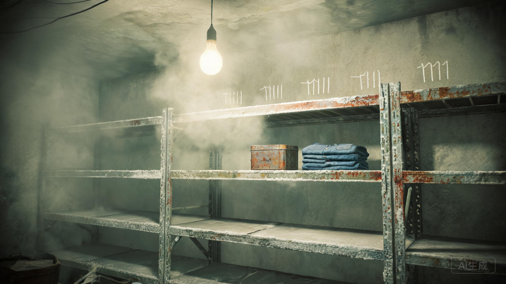

地下三层 · 温度 4℃ · 空气里有铁锈和药片受潮的味道
“第三排货架。铁盒还在。”

门在身后合上。冷气像一层薄薄的纸，贴在脸上。货架上还有编号，从 1 到 17。第三排第三层，铁盒还在。
盒盖生锈了，扣得很紧。你把盒盖翻过来，看见一个小小的密码锁：四位数字。
盒盖内侧有一行刻字：“最后那一夜。”
刻字：“最后那一夜。” · 球拍柄上也有同一组数字。
第四制药厂“安宁”营养剂临床观察人员名单（1987—1998）
1. 赵建国 2. 王秀兰 3. 李素芬 4. 刘长顺 5. 马胜利 6. 周桂芝 7. 孙德海 8. 高玉英 9. 陈国庆 10. 张凤琴 11. 田志强 12. 吴春花 13. 李福来 14. 郭秀珍 15. 韩振山 16. 宋小云 17. 郑小红
名单右下角有一个签字：郑国华。日期：1998年10月1日。
李素芬的名字后面，被人画了一个很小的圈。圈里写着两个字：“已停”。
名单背面，是父亲的字：“给素芬治病。给小默上学。别让他们再吃这个药。”
《爆破作业通知书》：10月7日23时40分，主楼爆破；地下层于22时00分封闭。落款：第四制药厂改制领导小组。
通知书的背面用铅笔写了一行：“名单已取。22点前离开。门若锁，从通风口。”
通风口的铁栅栏在货架后面。栅栏是新换的，螺丝却是1998年的旧螺丝。
铁盒底下还压着一件叠好的蓝色工装。左胸口袋上别着厂徽，编号 04071。旁边是一只解放鞋，鞋码 42。
没有遗体。
水泥墙上，有人用粉笔划了三十个“正”字。最后一个只划了一半。粉笔头落在墙根，断成两截。
二十九个半。五道一组，一共六组，最后半组只有四道半。
“正”字的高度和一个人坐着时抬手能够到的位置一样。粉笔是从下往上划的，最后几个字越来越淡，像手已经没有力气。
墙角还有一双解放鞋的另一只，鞋头朝着门。鞋底沾着水泥灰，灰里混着一点粥米。
名单上的十七个人，六个来自包装车间。母亲在第三行。父亲在名单背面写下三句话，第一句是“给素芬治病”。
父亲的工装叠得很整齐。一个准备从外面锁门的人，不会把工装叠好放在墙角。一个准备死的人，也不会把鞋头朝向门。
门内侧有抓痕。通风口的栅栏是新换的。铁盒底下的通知书说，22点前离开，“门若锁，从通风口”。
他没有死在这间冷库里。他试过从通风口出去，没有成功；或者，他出去了，但没有回家。